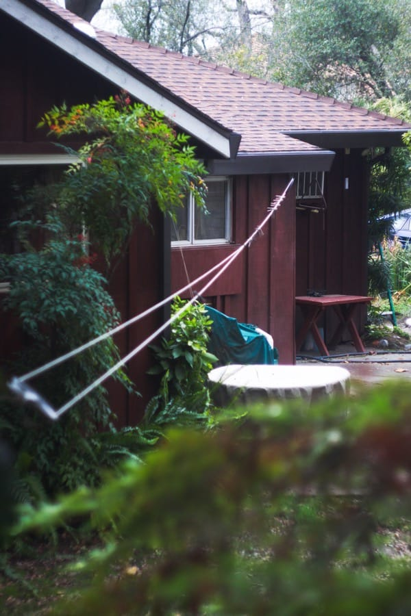

Photo
These are photos I've taken over the past few years, mainly on my Canon SL2. I use a variety of lenses, including the Helios-44, which is a vintage lens developed and manufactured in Russia in the 1970s under the USSR. It's one of my favorites to use because I think the juxtaposition between a modern camera and an extremely worn and old lens is an interesting combination

